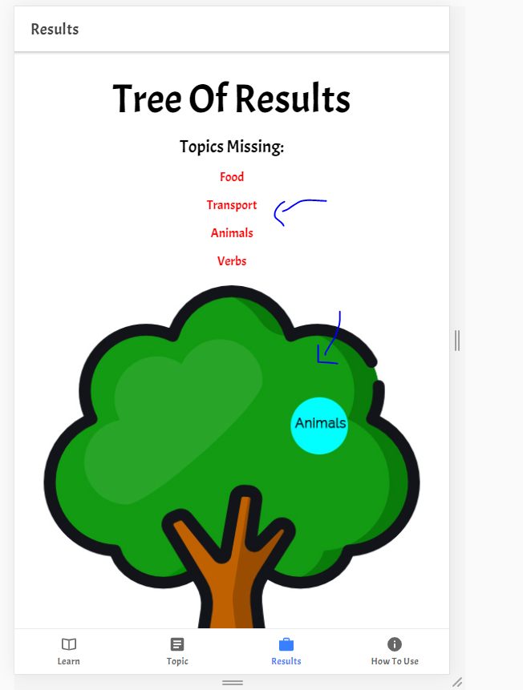
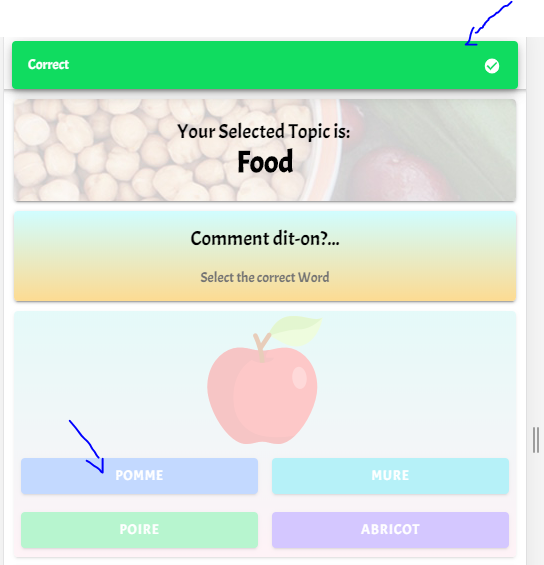

<ion-card>
  <ion-card-header class="ion-text-center">
    <ion-card-title>Results</ion-card-title>
    <br>
    
  </ion-card-header>
  <br>

  <ion-card-content>
    In Result Page, <strong> You will se a Tree that displays the Topics that has been approved</strong> and the ones that are missing to complete
    <br>
    <br>
    <h2 class="start-learning" routerLink="/tabs/topics"> Start Learning! </h2>
    
    <!--  -->
    <ion-icon class="icon-size" name="play"></ion-icon>
    <br>
  </ion-card-content>
</ion-card>
